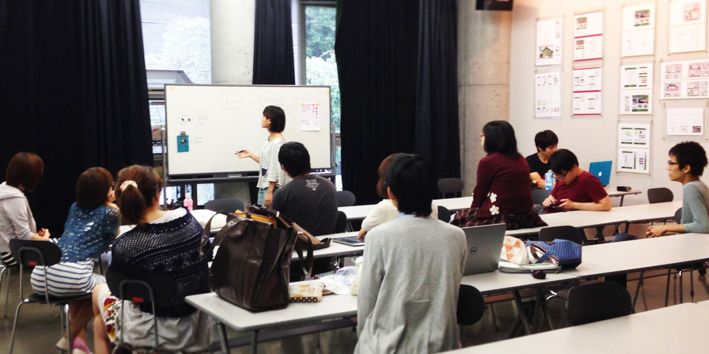
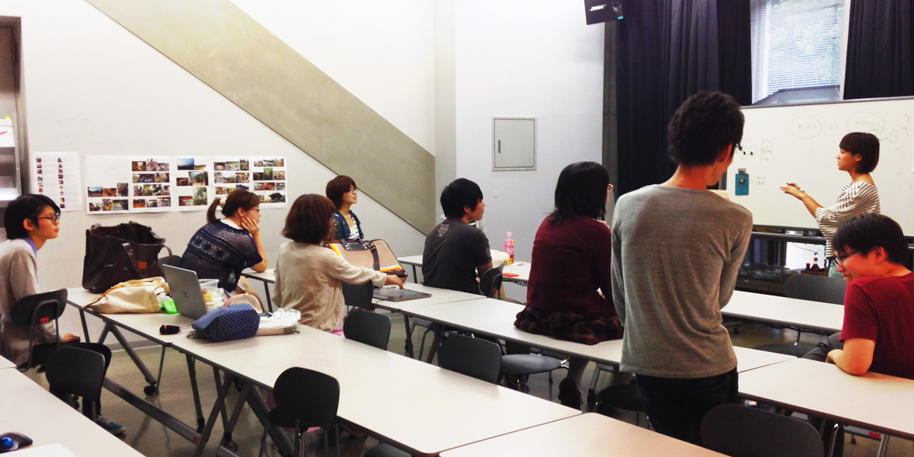

About
今年も東京造形大学 Creative Spiral Festival にて、昨年の Media Design Works 2013に引き続き、 Media Design Works 2014 を開催します。
東京造形大学メディアデザイン専攻領域の全学年から集まった有志学生が制作した、多数の作品が集まりました。
他専攻の展示にはない、実際に触れて体験できる作品を中心に、様々なジャンルの作品を展示します。
ぜひご来場ください。
Media Design Works 2014 一同
Works
{{ work.title }}
{% if work.images %} {% endif %}
{% endif %}
{% if work.icon %} {% endif %}{{ work.author }}
{% endif %}{{ work.author }}
{{ work.description }}
Photos

打ち合わせの様子

昨年度の展示風景
Info
開催概要
会期
10月17日(金) 12:00~20:00
10月18日(土)・19日(日) 10:00~20:00
場所
東京造形大学 7号館4階 7-406教室
アクセス
JR横浜線 相原駅よりスクールバスが運行されます。スクールバスの時刻表など、詳しくはCS祭公式サイトをご覧ください。